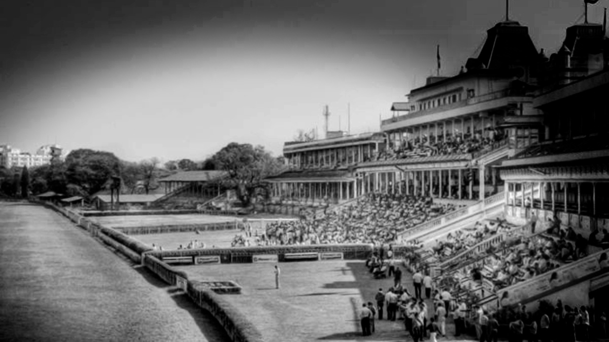
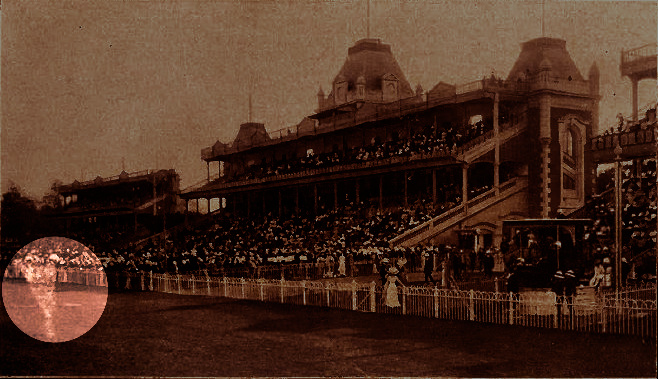

We love animals, and value them for their loyalty, and much more, we wouldn’t ever want to witness a galloping horse doing the rounds at the dead of the night. As queer as it may sound, it was built in 1820 you might actually get to witness it if you pass through the race course of the Royal Calcutta Turf Club at the wee hours of the night.
The legend says that somewhere back in the 1930s, there existed a racing buff named George Williams, a complete race freak. His passion, desire and dreams of winning the bet revolved around a snow-white horse named Pride, who was the champion of all tracks.
Who had won him many prices and widespread fame. As he began to age, her performance and grace began to slump, and so did her master’s fame. After running her last race, she was found dead on the track, and her death brought doom to William. Since then, the place is said to be haunted by Pride’s spirit.

People passing by The Royal Calcutta Turf Club, also known as Race Course, have observed and reported a white horse galloping on the tracks in a moonlit Saturday night. A perfect colour contrast makes the most horrific scene, scaring the hell out of the witnesses. Certainly a haunted place in Kolkata that one might want to avoid.Still today it is believed that it is her spirit that still gallops on the course.
Foggy Saturday nights at the Kolkata Race Course are frightening and spooky. People and maintenance staff relate foggy patches with “William Saheb ki Sada Ghora”.
THE END
Thanks,
Feel The Fear